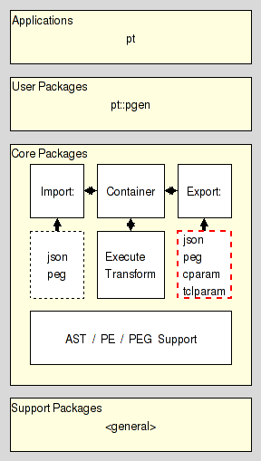

pt::peg::export::peg - PEG Export Plugin. Write PEG format
Are you lost ? Do you have trouble understanding this document ? In that case please read the overview provided by the Introduction to Parser Tools. This document is the entrypoint to the whole system the current package is a part of.
This package implements the parsing expression grammar export plugin for the generation of PEG markup.
It resides in the Export section of the Core Layer of Parser Tools and is intended to be used by pt::peg::export, the export manager, sitting between it and the corresponding core conversion functionality provided by pt::peg::to::peg.

While the direct use of this package with a regular interpreter is possible, this is strongly disrecommended and requires a number of contortions to provide the expected environment. The proper way to use this functionality depends on the situation:
In an untrusted environment the proper access is through the package pt::peg::export and the export manager objects it provides.
In a trusted environment however simply use the package pt::peg::to::peg and access the core conversion functionality directly.
The API provided by this package satisfies the specification of the Plugin API found in the Parser Tools Export API specification.
This command takes the canonical serialization of a parsing expression grammar, as specified in section PEG serialization format, and contained in serial, the configuration, a dictionary, and generates PEG markup encoding the grammar. The created string is then returned as the result of the command.
The PEG export plugin recognizes the following configuration variables and changes its behaviour as they specify.
If this configuration variable is set it is assumed to contain a string into which to put the generated text and other configuration data. The various locations are expected to be specified with the following placeholders:
To be replaced with the value of the configuration variable user.
To be replaced with the the constant PEG.
To be replaced with the value of the configuration variable file.
To be replaced with the value of the configuration variable name.
To be replaced with the generated text.
If this configuration variable is not set, or empty, then the plugin falls back to a standard template, which is defined as "@code@".
Note that this plugin may ignore the standard configuration variables user, format, file, and their values, depending on the chosen template.
The content of the standard configuration variable name, if set, is used as name of the grammar in the output. Otherwise the plugin falls back to the default name a_pe_grammar.
peg, a language for the specification of parsing expression grammars is meant to be human readable, and writable as well, yet strict enough to allow its processing by machine. Like any computer language. It was defined to make writing the specification of a grammar easy, something the other formats found in the Parser Tools do not lend themselves too.
It is formally specified by the grammar shown below, written in itself. For a tutorial / introduction to the language please go and read the PEG Language Tutorial.
PEG pe-grammar-for-peg (Grammar)
# --------------------------------------------------------------------
# Syntactical constructs
Grammar <- WHITESPACE Header Definition* Final EOF ;
Header <- PEG Identifier StartExpr ;
Definition <- Attribute? Identifier IS Expression SEMICOLON ;
Attribute <- (VOID / LEAF) COLON ;
Expression <- Sequence (SLASH Sequence)* ;
Sequence <- Prefix+ ;
Prefix <- (AND / NOT)? Suffix ;
Suffix <- Primary (QUESTION / STAR / PLUS)? ;
Primary <- ALNUM / ALPHA / ASCII / CONTROL / DDIGIT / DIGIT
/ GRAPH / LOWER / PRINTABLE / PUNCT / SPACE / UPPER
/ WORDCHAR / XDIGIT
/ Identifier
/ OPEN Expression CLOSE
/ Literal
/ Class
/ DOT
;
Literal <- APOSTROPH (!APOSTROPH Char)* APOSTROPH WHITESPACE
/ DAPOSTROPH (!DAPOSTROPH Char)* DAPOSTROPH WHITESPACE ;
Class <- OPENB (!CLOSEB Range)* CLOSEB WHITESPACE ;
Range <- Char TO Char / Char ;
StartExpr <- OPEN Expression CLOSE ;
void: Final <- "END" WHITESPACE SEMICOLON WHITESPACE ;
# --------------------------------------------------------------------
# Lexing constructs
Identifier <- Ident WHITESPACE ;
leaf: Ident <- ([_:] / <alpha>) ([_:] / <alnum>)* ;
Char <- CharSpecial / CharOctalFull / CharOctalPart
/ CharUnicode / CharUnescaped
;
leaf: CharSpecial <- "\\" [nrt'"\[\]\\] ;
leaf: CharOctalFull <- "\\" [0-2][0-7][0-7] ;
leaf: CharOctalPart <- "\\" [0-7][0-7]? ;
leaf: CharUnicode <- "\\" 'u' HexDigit (HexDigit (HexDigit HexDigit?)?)? ;
leaf: CharUnescaped <- !"\\" . ;
void: HexDigit <- [0-9a-fA-F] ;
void: TO <- '-' ;
void: OPENB <- "[" ;
void: CLOSEB <- "]" ;
void: APOSTROPH <- "'" ;
void: DAPOSTROPH <- '"' ;
void: PEG <- "PEG" !([_:] / <alnum>) WHITESPACE ;
void: IS <- "<-" WHITESPACE ;
leaf: VOID <- "void" WHITESPACE ; # Implies that definition has no semantic value.
leaf: LEAF <- "leaf" WHITESPACE ; # Implies that definition has no terminals.
void: SEMICOLON <- ";" WHITESPACE ;
void: COLON <- ":" WHITESPACE ;
void: SLASH <- "/" WHITESPACE ;
leaf: AND <- "&" WHITESPACE ;
leaf: NOT <- "!" WHITESPACE ;
leaf: QUESTION <- "?" WHITESPACE ;
leaf: STAR <- "*" WHITESPACE ;
leaf: PLUS <- "+" WHITESPACE ;
void: OPEN <- "(" WHITESPACE ;
void: CLOSE <- ")" WHITESPACE ;
leaf: DOT <- "." WHITESPACE ;
leaf: ALNUM <- "<alnum>" WHITESPACE ;
leaf: ALPHA <- "<alpha>" WHITESPACE ;
leaf: ASCII <- "<ascii>" WHITESPACE ;
leaf: CONTROL <- "<control>" WHITESPACE ;
leaf: DDIGIT <- "<ddigit>" WHITESPACE ;
leaf: DIGIT <- "<digit>" WHITESPACE ;
leaf: GRAPH <- "<graph>" WHITESPACE ;
leaf: LOWER <- "<lower>" WHITESPACE ;
leaf: PRINTABLE <- "<print>" WHITESPACE ;
leaf: PUNCT <- "<punct>" WHITESPACE ;
leaf: SPACE <- "<space>" WHITESPACE ;
leaf: UPPER <- "<upper>" WHITESPACE ;
leaf: WORDCHAR <- "<wordchar>" WHITESPACE ;
leaf: XDIGIT <- "<xdigit>" WHITESPACE ;
void: WHITESPACE <- (" " / "\t" / EOL / COMMENT)* ;
void: COMMENT <- '#' (!EOL .)* EOL ;
void: EOL <- "\n\r" / "\n" / "\r" ;
void: EOF <- !. ;
# --------------------------------------------------------------------
END;
Our example specifies the grammar for a basic 4-operation calculator.
PEG calculator (Expression)
Digit <- '0'/'1'/'2'/'3'/'4'/'5'/'6'/'7'/'8'/'9' ;
Sign <- '-' / '+' ;
Number <- Sign? Digit+ ;
Expression <- Term (AddOp Term)* ;
MulOp <- '*' / '/' ;
Term <- Factor (MulOp Factor)* ;
AddOp <- '+'/'-' ;
Factor <- '(' Expression ')' / Number ;
END;
Using higher-level features of the notation, i.e. the character classes (predefined and custom), this example can be rewritten as
PEG calculator (Expression)
Sign <- [-+] ;
Number <- Sign? <ddigit>+ ;
Expression <- '(' Expression ')' / (Factor (MulOp Factor)*) ;
MulOp <- [*/] ;
Factor <- Term (AddOp Term)* ;
AddOp <- [-+] ;
Term <- Number ;
END;
Here we specify the format used by the Parser Tools to serialize Parsing Expression Grammars as immutable values for transport, comparison, etc.
We distinguish between regular and canonical serializations. While a PEG may have more than one regular serialization only exactly one of them will be canonical.
The serialization of any PEG is a nested Tcl dictionary.
This dictionary holds a single key, pt::grammar::peg, and its value. This value holds the contents of the grammar.
The contents of the grammar are a Tcl dictionary holding the set of nonterminal symbols and the starting expression. The relevant keys and their values are
The value is a Tcl dictionary whose keys are the names of the nonterminal symbols known to the grammar.
Each nonterminal symbol may occur only once.
The empty string is not a legal nonterminal symbol.
The value for each symbol is a Tcl dictionary itself. The relevant keys and their values in this dictionary are
The value is the serialization of the parsing expression describing the symbols sentennial structure, as specified in the section PE serialization format.
The value can be one of three values specifying how a parser should handle the semantic value produced by the symbol.
The semantic value of the nonterminal symbol is an abstract syntax tree consisting of a single node node for the nonterminal itself, which has the ASTs of the symbol's right hand side as its children.
The semantic value of the nonterminal symbol is an abstract syntax tree consisting of a single node node for the nonterminal, without any children. Any ASTs generated by the symbol's right hand side are discarded.
The nonterminal has no semantic value. Any ASTs generated by the symbol's right hand side are discarded (as well).
The value is the serialization of the start parsing expression of the grammar, as specified in the section PE serialization format.
The terminal symbols of the grammar are specified implicitly as the set of all terminal symbols used in the start expression and on the RHS of the grammar rules.
The canonical serialization of a grammar has the format as specified in the previous item, and then additionally satisfies the constraints below, which make it unique among all the possible serializations of this grammar.
The keys found in all the nested Tcl dictionaries are sorted in ascending dictionary order, as generated by Tcl's builtin command lsort -increasing -dict.
The string representation of the value is the canonical representation of a Tcl dictionary. I.e. it does not contain superfluous whitespace.
Assuming the following PEG for simple mathematical expressions
PEG calculator (Expression)
Digit <- '0'/'1'/'2'/'3'/'4'/'5'/'6'/'7'/'8'/'9' ;
Sign <- '-' / '+' ;
Number <- Sign? Digit+ ;
Expression <- Term (AddOp Term)* ;
MulOp <- '*' / '/' ;
Term <- Factor (MulOp Factor)* ;
AddOp <- '+'/'-' ;
Factor <- '(' Expression ')' / Number ;
END;
then its canonical serialization (except for whitespace) is
pt::grammar::peg {
rules {
AddOp {is {/ {t -} {t +}} mode value}
Digit {is {/ {t 0} {t 1} {t 2} {t 3} {t 4} {t 5} {t 6} {t 7} {t 8} {t 9}} mode value}
Expression {is {x {n Term} {* {x {n AddOp} {n Term}}}} mode value}
Factor {is {/ {x {t (} {n Expression} {t )}} {n Number}} mode value}
MulOp {is {/ {t *} {t /}} mode value}
Number {is {x {? {n Sign}} {+ {n Digit}}} mode value}
Sign {is {/ {t -} {t +}} mode value}
Term {is {x {n Factor} {* {x {n MulOp} {n Factor}}}} mode value}
}
start {n Expression}
}
Here we specify the format used by the Parser Tools to serialize Parsing Expressions as immutable values for transport, comparison, etc.
We distinguish between regular and canonical serializations. While a parsing expression may have more than one regular serialization only exactly one of them will be canonical.
The string epsilon is an atomic parsing expression. It matches the empty string.
The string dot is an atomic parsing expression. It matches any character.
The string alnum is an atomic parsing expression. It matches any Unicode alphabet or digit character. This is a custom extension of PEs based on Tcl's builtin command string is.
The string alpha is an atomic parsing expression. It matches any Unicode alphabet character. This is a custom extension of PEs based on Tcl's builtin command string is.
The string ascii is an atomic parsing expression. It matches any Unicode character below U0080. This is a custom extension of PEs based on Tcl's builtin command string is.
The string control is an atomic parsing expression. It matches any Unicode control character. This is a custom extension of PEs based on Tcl's builtin command string is.
The string digit is an atomic parsing expression. It matches any Unicode digit character. Note that this includes characters outside of the [0..9] range. This is a custom extension of PEs based on Tcl's builtin command string is.
The string graph is an atomic parsing expression. It matches any Unicode printing character, except for space. This is a custom extension of PEs based on Tcl's builtin command string is.
The string lower is an atomic parsing expression. It matches any Unicode lower-case alphabet character. This is a custom extension of PEs based on Tcl's builtin command string is.
The string print is an atomic parsing expression. It matches any Unicode printing character, including space. This is a custom extension of PEs based on Tcl's builtin command string is.
The string punct is an atomic parsing expression. It matches any Unicode punctuation character. This is a custom extension of PEs based on Tcl's builtin command string is.
The string space is an atomic parsing expression. It matches any Unicode space character. This is a custom extension of PEs based on Tcl's builtin command string is.
The string upper is an atomic parsing expression. It matches any Unicode upper-case alphabet character. This is a custom extension of PEs based on Tcl's builtin command string is.
The string wordchar is an atomic parsing expression. It matches any Unicode word character. This is any alphanumeric character (see alnum), and any connector punctuation characters (e.g. underscore). This is a custom extension of PEs based on Tcl's builtin command string is.
The string xdigit is an atomic parsing expression. It matches any hexadecimal digit character. This is a custom extension of PEs based on Tcl's builtin command string is.
The string ddigit is an atomic parsing expression. It matches any decimal digit character. This is a custom extension of PEs based on Tcl's builtin command regexp.
The expression [list t x] is an atomic parsing expression. It matches the terminal string x.
The expression [list n A] is an atomic parsing expression. It matches the nonterminal A.
For parsing expressions e1, e2, ... the result of [list / e1 e2 ... ] is a parsing expression as well. This is the ordered choice, aka prioritized choice.
For parsing expressions e1, e2, ... the result of [list x e1 e2 ... ] is a parsing expression as well. This is the sequence.
For a parsing expression e the result of [list * e] is a parsing expression as well. This is the kleene closure, describing zero or more repetitions.
For a parsing expression e the result of [list + e] is a parsing expression as well. This is the positive kleene closure, describing one or more repetitions.
For a parsing expression e the result of [list & e] is a parsing expression as well. This is the and lookahead predicate.
For a parsing expression e the result of [list ! e] is a parsing expression as well. This is the not lookahead predicate.
For a parsing expression e the result of [list ? e] is a parsing expression as well. This is the optional input.
The canonical serialization of a parsing expression has the format as specified in the previous item, and then additionally satisfies the constraints below, which make it unique among all the possible serializations of this parsing expression.
The string representation of the value is the canonical representation of a pure Tcl list. I.e. it does not contain superfluous whitespace.
Terminals are not encoded as ranges (where start and end of the range are identical).
Assuming the parsing expression shown on the right-hand side of the rule
Expression <- Term (AddOp Term)*
then its canonical serialization (except for whitespace) is
{x {n Term} {* {x {n AddOp} {n Term}}}}
This document, and the package it describes, will undoubtedly contain bugs and other problems. Please report such in the category pt of the Tcllib Trackers. Please also report any ideas for enhancements you may have for either package and/or documentation.
EBNF, LL(k), PEG, TDPL, context-free languages, export, expression, grammar, matching, parser, parsing expression, parsing expression grammar, plugin, push down automaton, recursive descent, serialization, state, top-down parsing languages, transducer
Parsing and Grammars
Copyright © 2009 Andreas Kupries <andreas_kupries@users.sourceforge.net>